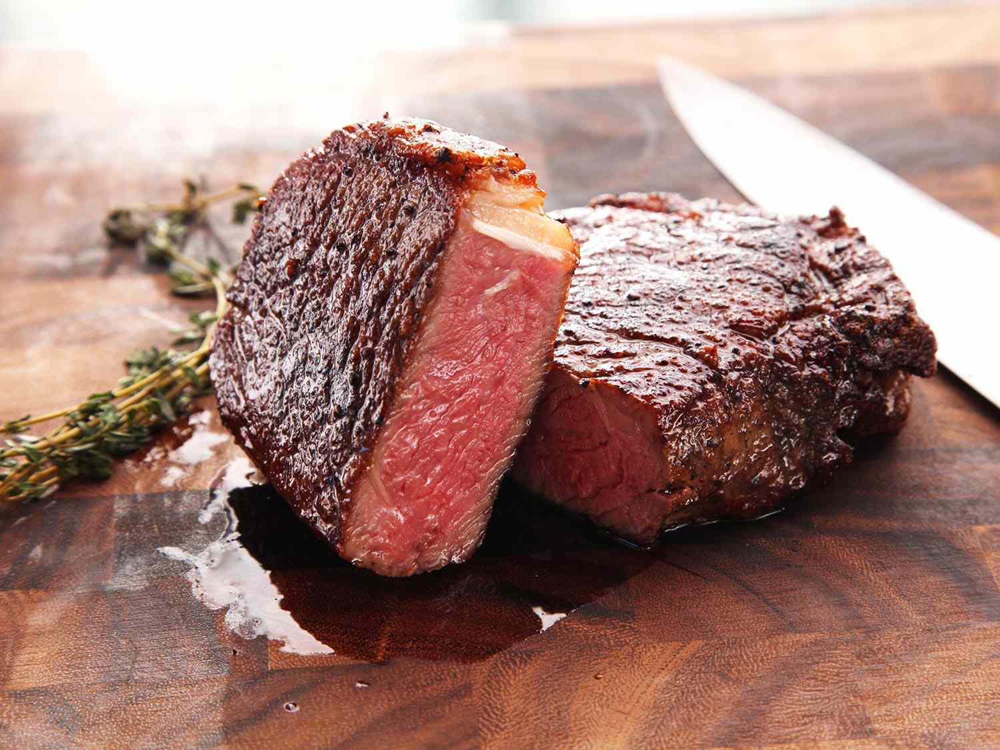

STEAK

Description
It’s as simple as this: while the steak is searing in the pan, throw in butter, garlic and thyme and baste continuously as the steak finishes cooking. The garlic-thyme infused butter does all sorts of wonderful things to the steak, seeping into the cracks and crevices, and adhering to the crust of the steak
It’s pan seared steak made Outrageous – and that’s Outrageous with a capital “O”!.
Ingredients
- 1 – 2 boneless ribeye or scotch fillet , 2.5 cm / 1″ thick, approx 300g/10 each/(Note 1)
- 1 tbsp vegetable oil
- Salt and pepper
- 75g / 5 tbsp unsalted butter , cut into 1.25cm / 1/2″ cubes (Note 2)
- 6 sprigs fresh thyme or 3 sprigs rosemary
- 5 garlic cloves , peeled and smashed to split (Note 3)
Steps
- Bring to room temp: Take the steak out of the fridge 30 minutes prior to bring to room temperature.
- Dry steaks: Pat dry with paper towels.
- Heat skillet: Heat oil in a heavy based skillet over high heat until it is very hot – you should see smoke!.
- Season: Sprinkle each side of the steak generously with salt and pepper, then immediately place in the skillet.
- Sear Side 1: Cook for 2 – 2.5 minutes until you get a great crust, then turn.
- Garlic Butter: Leave for 1 minute, then push steaks to one side and toss in butter, garlic and thyme. BE CAREFUL – the thyme will sputter!
- Baste: As soon as the butter is melted, continuously spoon the butter over the steak until it’s cooked to your liking – 2 minutes in total for the 2nd side for medium rare (52C/125F)
- Basting also renders fat on the side of the steak – use tongs to sear the edges at the end if you want it browned more.
- Rest: Transfer steak to a plate and cover loosely with foil, rest for 5 to 10 minutes.
- Serve steak with a bit of the butter from the skillet drizzled on top. Pictured in post with Crispy Smashed Potatoes.